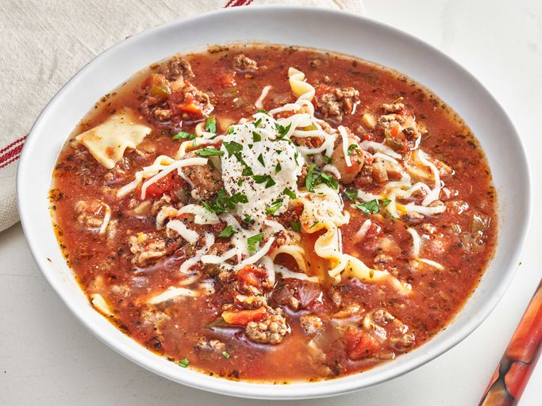

Easy Slow Cooker Lasagna

This slow cooker lasagna soup has all the flavors you love from lasagna, thrown together in a slow cooker without all the work and cleanup. I like to add 1/2 pound of Italian sausage to this but it is not necessary.
Ingredients
- 1 pound ground beef
- 1 green bell pepper, chopped
- 1 medium onion, chopped
- 1 (14.5 ounce) can petite diced tomatoes
- 1 (28 ounce) can crushed tomatoes
- 1 (32 ounce) carton beef broth
- 1 (4 ounce) can sliced mushrooms
- 2 teaspoons Italian seasoning, or more to taste
- 5 lasagna noodles
- 1/2 cup shredded mozzarella cheese
- 4 dollops ricotta cheese (optional)
- 1/4 tsp salt and freshly ground black pepper
Steps
- Crumble ground beef in a large skillet over medium heat. Cook and stir for 5 minutes. Drain.
- Place beef in the bottom of a slow cooker. Add bell pepper, onion, diced tomatoes, crushed tomatoes, beef broth, mushrooms, and Italian seasoning. Cook on low 4 hours.
- Add broken lasagna noodles. Cook on Low until noodles are tender, about 45 minutes more. Season with salt and pepper to taste.
- Ladle soup into serving bowls. Divide mozzarella cheese between the bowls. Top each bowl with a dollop of ricotta cheese